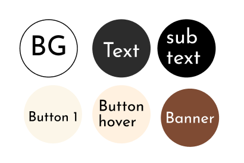
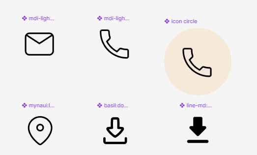

Project Scope
Sometimes customers don’t walk away because the product isn’t good. They leave because the digital experience is slow, confusing, or uninspiring.
When a website feels heavy or difficult to navigate, even the most beautifully crafted products can lose their appeal. Attention fades. Interest drops. And the purchase never happens.
We redesigned the experience to be faster, cleaner, and more intuitive—ensuring that nothing stands between great craftsmanship and the customer’s decision to buy.
Duration
2 Months
Timeline:
Phase 1:
Discovery & Audit
Phase 2:
Strategy & UX Planning
Phase 3:
UI Design
Phase 4:
Development (WordPress Implementation)
Phase 5:
Testing & Launch
Old Design

New Design

Context & Background

The website represents Bali Teak, a premium furniture brand offering solid teak wood furniture. The primary audience includes homeowners, interior design enthusiasts, and customers in Halifax who are looking for high-quality, ethically sourced furniture with a strong cultural story.
The original website was intended to:
- Introduce Bali Teak as a furniture brand
- Showcase its teak furniture collections
- Encourage users to explore products and get in touch
What Changed & Why


Mobile Responsive

Quick UX Audit
Why a Redesign Was Needed?
| Area | Issue | New Direction |
|---|---|---|
| Visual Design |

Outdated visual style that did not reflect a premium brand. |

Modern, premium visual language Clean layout, consistent typography, refined spacing, and a restrained color palette to reflect a high-end brand. |
| Information Hierarchy |
Products were not clearly showcased, reducing product visibility. |
Product-first presentation Prominently showcase products using high-quality imagery and clear categorization to improve visibility and clarity. |
| Product Presentation |
Poor information hierarchy, making the content difficult to scan. |
Clear information hierarchy Structured content with strong headings, concise copy, and intentional spacing for easier scanning. |
| Responsiveness |
Layout was not optimized for mobile devices. |
Mobile-first responsive layout Optimized layouts, spacing, and typography to ensure a seamless experience across all devices. |
Key Screen & Information Architecture
Sitemap Iteration Process:
There is many feature and page that we plan to build, but we need to
priortize what feature and page that we need to build first according
to the client needs.

Simple Design System & Prototyping
Button Component Variations

Color Palette

Icons

Font Family

Card & Slider

Implementation Challenges
The main challenge was bridging the gap between the UI design and the limitations of Elementor during implementation. Some layouts initially struggled with responsiveness, particularly when relying solely on Elementor's container system. I helped restructure these sections using Flexbox and CSS Grid to achieve more flexible responsive behavior.
I also considered Elementor's available components during the design process to ensure that proposed UI patterns—such as sliders and carousels—could be realistically implemented without unnecessary custom development.
Since Bali Teak also had a limited visual identity, I developed several color directions and presented them to the client before establishing a simple and consistent color palette.
Throughout the project, I balanced visual quality, implementation feasibility, and a fast delivery timeline, while also ensuring the Elementor setup, licensing, and custom code were suitable for long-term maintenance.